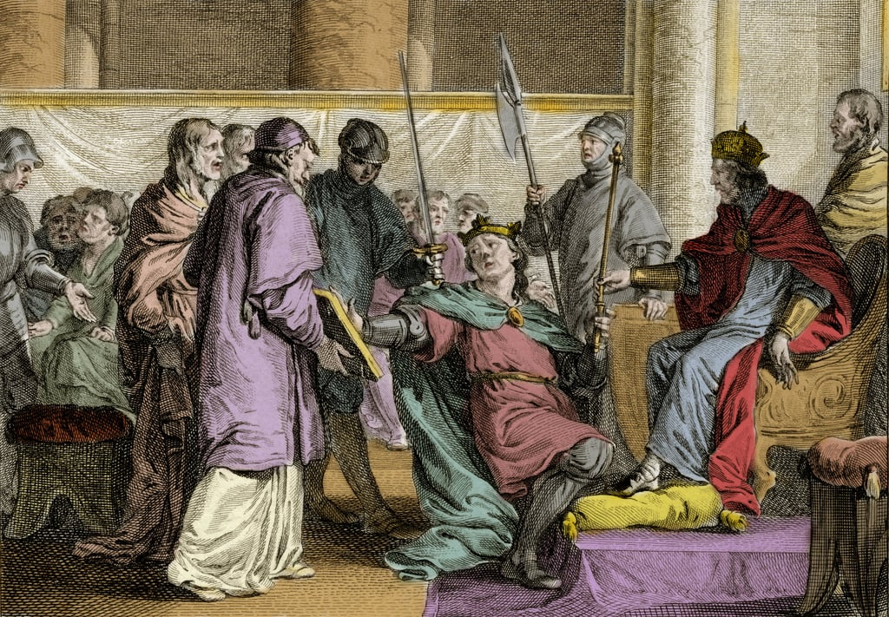
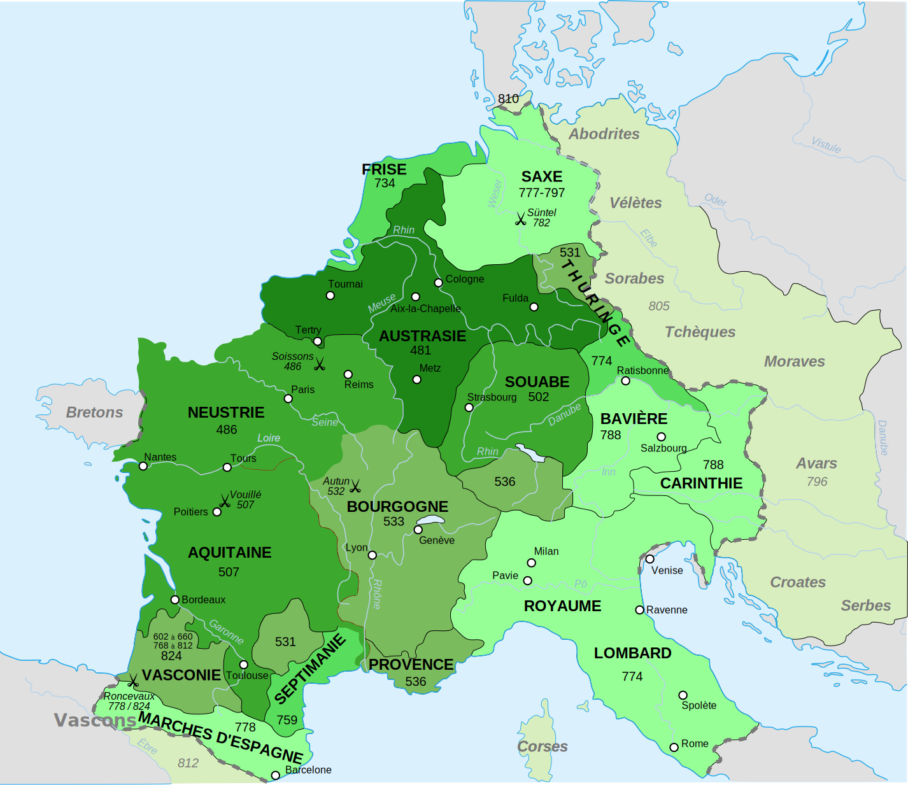
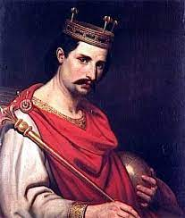
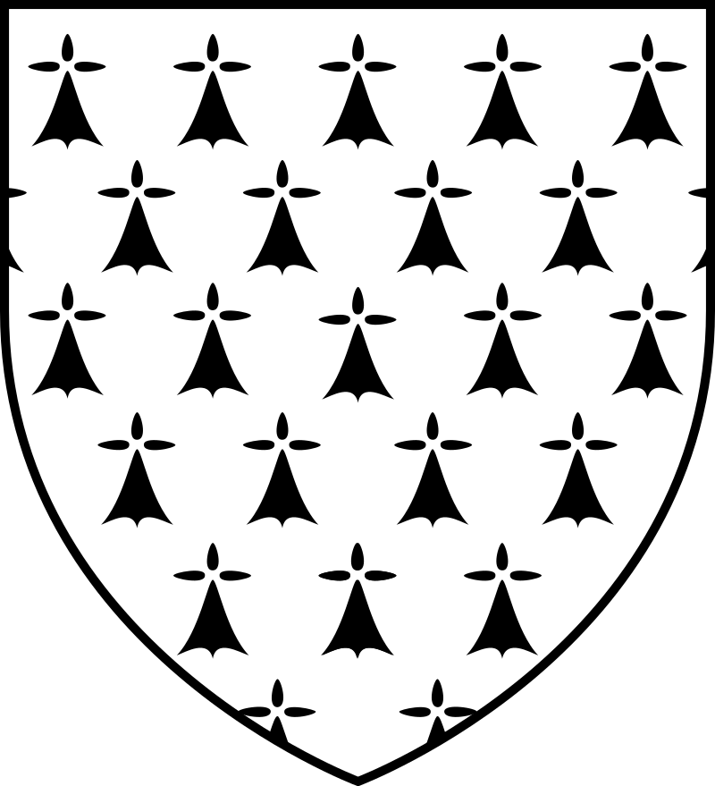
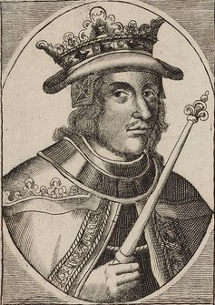

●
851-857
●
851-857 
| 🡰 Erispoë 🡲 | Menu Histoire 🏰 |
●
851-857
Erispoë (Erispoe) est le premier Roi de Bretagne. Il est le fils de Nominoë, fondateur du Royaume de Bretagne, Il est Roi de Bretagne de 851 jusqu'à sa mort entre le 2 et le 12 novembre 857. Il est reconnu Roi pour avoir achevé le travail de son père lors des Marches de Bretagne, après avoir repris le commandement de l'armée bretonne à la mort de son père. Il meurt assassiné par son cousin Salomon, qui sera le futur Roi de Bretagne.
 |
 |
 |
| Sacre d'Erispoë (Gravure 1810) | Erispoë | Sacre d'Erispoë (Colorisé) |
La bataille de Jengland est une des plus grandes victoires bretonnes de l'Histoire, elle se déroule le 22 août 851 à Jengland-Beslé, en actuelle Ille-et-Vilaine. Elle oppose le Royaume de Bretagne dirigé par Erispoë contre le Royaume de Francie occidentale dirigé par Charles le Chauve. L'Armée Bretonne comprenait 1000 hommes contre 4000 à 6000 soldats francs. Suite à la victoire bretonne, la région est conquise et Erispoë obtient le titre royal reconnu par Charles le Chauve. L'indépendance de la Bretagne est reconnue. Le traité d'Angers reconnait également les Marches de Bretagne comme territoire du Royaume de Bretagne.
|  |  |
 |
| Carte de l'Empire Franc avant le Traité d'Angers | Aquisitions au Traité d'Angers sous Erispoë | Charles II le Chauve, Roi de Francie Occidentale |
Durant le règne d'Erispoë, en 853, un pillage normand, c'est-à-dire norvégien, a lieu à Nantes. Pour se venger, Erispoë, roi de Bretagne, conclut une alliance avec Horik Ier de Danemark et entrent en guerre contre le Royaume de Norvège. Les Normands capitulent et offrent des présents aux bretons et dannois. Erispoë est assasiné l'autel de l'église de Talensac 4 ans plus tard, par Salomon, qui deviendra Roi de Bretagne juste après Erispoë.
 |
 |  |
| Salomon de Bretagne | Rois de Bretagne | Horik Ier de Dannemark |
Liens Utiles :
|

|